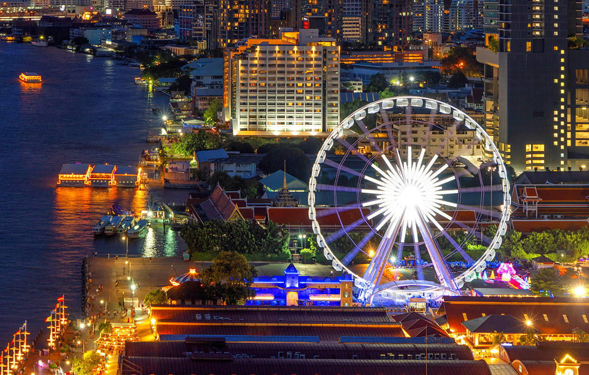

8 เอเชียทีค เดอะ ริเวอร์ฟรอนท์
เอเชียทีค เดอะ ริเวอร์ฟรอนท์ เปิดให้บริการในปีพ.ศ. 2555 และกลายเป็นแลนด์มาร์กอีกแห่งหนึ่งในพื้นที่ ริมแม่น้ำเจ้าพระยา เอเชียทีค เดอะ ริเวอร์ฟรอนท์ จะมอบประสบการณ์การช็อปปิ้งที่ไม่เหมือนใครซึ่งผสมผสานระหว่างไนท์บาซาร์แบบดั้งเดิมกับห้างสรรพสินค้าที่ทันสมัย ตลาดกลางแจ้งขนาดใหญ่ซึ่งตั้งอยู่ริมฝั่งแม่น้ำเจ้าพระยานี้ ในอดีตเป็นท่าเทียบเรือของบริษัทอีสต์เอเชียติก ปัจจุบันนี้พื้นที่แห่งนี้ประกอบด้วยโรงละคร 2 โรง ร้านค้า 1,500 ร้าน และร้านบูติก รวมถึงร้านอาหาร 40 แห่ง นักท่องเที่ยวสามารถชมวิวมุมสูงได้ด้วยการนั่ง ASIATIQUE SKY ชิงช้าสวรรค์สูง 60 เมตรที่มีทั้งหมด 42 กระเช้า